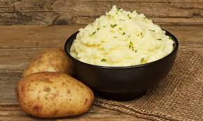

Home
Smashed Potatoes

Description
Smashed potatoes are crispy on the outside, fluffy on the inside, and incredibly
satisfying. They're made by boiling small potatoes until tender, gently smashing
them, then roasting until golden and crisp. Perfect as a side dish or appetizer,
they're easy to customize with garlic, herbs, cheese, or whatever toppings you
love.
This version keeps it simple and flavorful, using olive oil, garlic, and fresh
herbs to complement the natural richness of the potatoes. You can serve them with
a dipping sauce like sour cream, aioli, or just eat them straight off the tray,
they're that good.
Ingredients
- 1½ to 2 pounds baby potatoes (Yukon Gold or red potatoes work well)
- 3 tablespoons olive oil
- 2 cloves garlic, minced
- Salt, to taste
- Freshly ground black pepper, to taste)
- Fresh herbs for garnish (parsley, rosemary, or thyme)
- Optional: grated parmesan cheese, chili flakes, or a squeeze of lemon juice
Steps
- Boil the potatoes
- Place the potatoes in a large pot and cover with cold,
salted water.
- Bring to a boil and cook until the potatoes are fork-tender
(about 15 to 20 minutes).
- Drain and let them cool slightly on a clean towel or
baking tray.
- Preheat and prepare
- Preheat your oven to 425°F (220°C).
- Line a baking sheet with parchment paper or lightly oil it.
- In a small bowl, mix the olive oil with minced garlic.
- Smash the potatoes
- Place the boiled potatoes on the baking sheet, spaced
slightly apart.
- Use the bottom of a glass, jar, or potato masher to
gently press each one down until about ½ inch thick.
- Be careful not to break them apart completely,
they should hold together with cracked edges.
- Season and roast
- Brush each smashed potato with the garlic olive oil
mixture.
- Sprinkle with salt, pepper, and optional toppings like
parmesan or chili flakes.
- Roast in the oven for 20 to 25 minutes, or until the edges
are golden and crispy.
- Garnish and serve
- Remove from the oven and let rest briefly.
- Finish with chopped fresh herbs and a little lemon juice
if desired.
- Serve warm with a dipping sauce or alongside your main dish.
Tips
- Let the potatoes dry completely before smashing, this helps them
crisp up better in the oven.
- For extra crispiness, broil the potatoes for the last 2 to 3
minutes of roasting (just keep a close eye on them!).